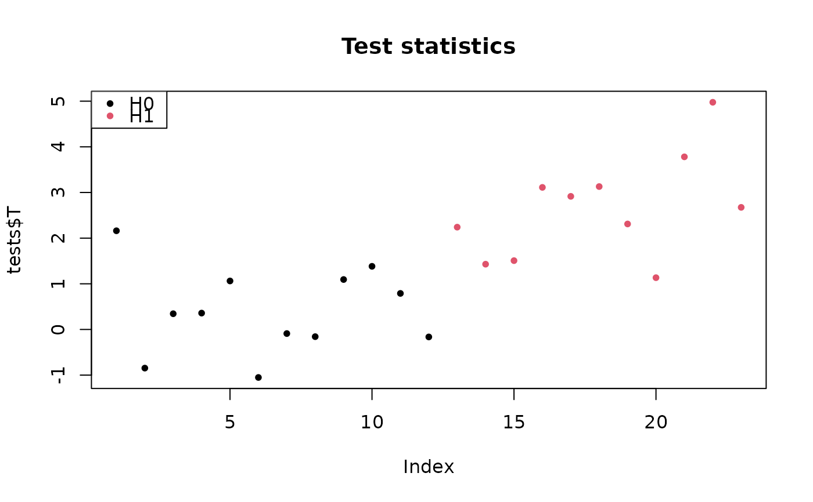
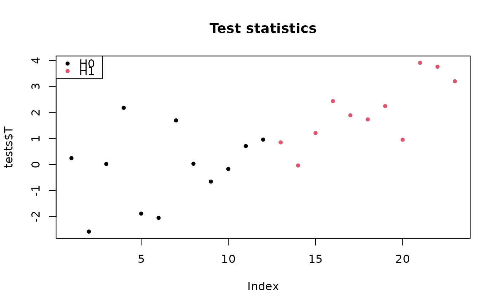

Simulate equi-correlated data coming from one or two populations
Arguments
- m
Number of hypotheses
- rho
Level of equi-correlation between pairs of variables
- n
Number of observations, i.e. sample size
- pi0
Proportion of true null hypotheses
- SNR
Signal to noise ratio. Either a numeric value (a measure of distance between H0 and H1) or a vector of length
m*(1-pi0)- prob
A numeric value in (0, 1], the frequency of the population under H1. If \(prob=1\) (the default), a data set from a single population is generated.
- w
An optional vector of length
n, the underlying factor driving equi-correlation
Value
A list with three elements:
- X
An \(m x n\) matrix of \(m\)-dimensional Gaussian observations, where \(m1\) rows are under H1, and \(m0\) rows are under H0, with \(m0/m = pi0\)
- categ
A numeric vector of length \(n\) matching each observation to a sample (in 0 or 1)
- H
A vector of length \(m\), the status of each hypothesis: 0 for true null hypothesis, and 1 for true alternative hypothesis
.
Details
If prob = 1, each of \(m_1\) variables under \(H_1\) has
mean \(SNR/\sqrt(n)\). If 0 < p < 1, then \(n_0\) samples are
drawn from a \(\mathcal{N}(0,1)\) distribution while \(n_1\) are drawn
from a \(\mathcal{N}(\mu, 1)\) distribution, where \(\mu =
SNR*\sqrt(1/(n_0) + 1/n_1)\). The argument p is the probability of a
sample to belong to the non-zero-mean population.
Examples
m <- 23
rho <- 0.2
n <- 100
pi0 <- 0.5
B <- 1e3
## two-sample data
sim <- gaussianSamples(m, rho, n, pi0, SNR = 2, prob = 0.5)
tests <- testByRandomization(sim$X, sim$categ, B = B)
## show test statistics
pch <- 20
colStat <- 1+sim$H
plot(tests$T, col=colStat, main="Test statistics", pch=pch)
legend("topleft", c("H0", "H1"), pch=pch, col=1:2)

## one-sample data
sim <- gaussianSamples(m, rho, n, pi0, SNR=2)
tests <- testByRandomization(sim$X, B = B)
## show test statistics
pch <- 20
colStat <- 1+sim$H
plot(tests$T, col=colStat, main="Test statistics", pch=pch)
legend("topleft", c("H0", "H1"), pch=pch, col=1:2)
